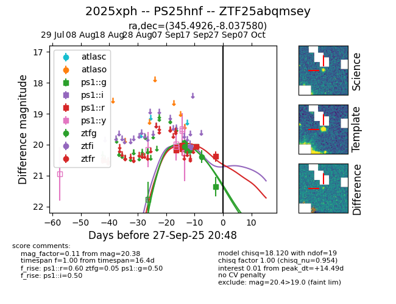
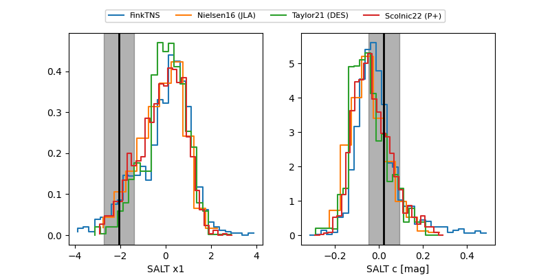

FINK: ZTF25abqmsey
Lasair: ZTF25abqmsey
ALeRCE: ZTF25abqmsey
TNS: 2025xph
YSE: 2025xph
ZTF25abqmsey (ztf,fink)
2025xph (tns,yse)
PS25hnf (panstarrs)
equatorial (ra, dec) = (345.4926,-8.03758)
galactic (l, b) = (64.2121,-57.81950)


last ps1::g=21.36, ps1::i=20.08, ps1::r=20.38, ztfg=20.39
5 ps1::g, 1 ps1::i, 6 ps1::r, 3 ztfg detections